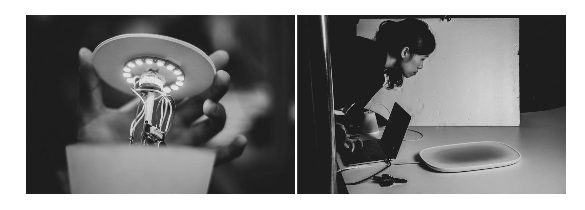
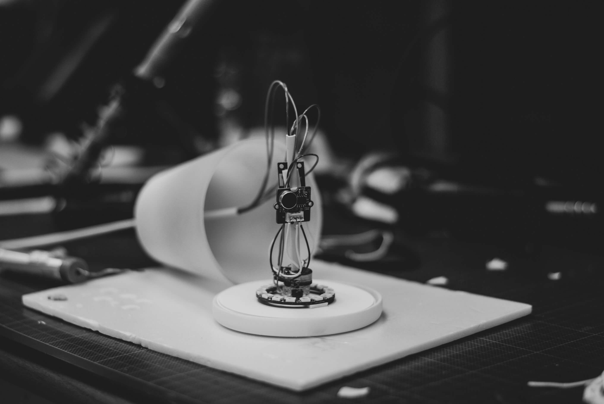
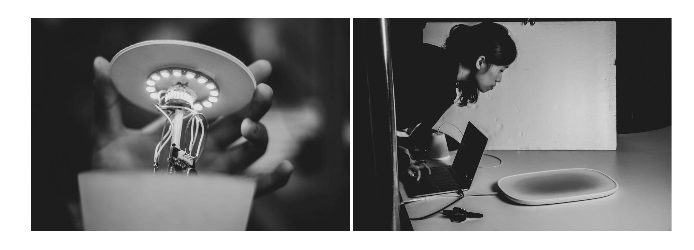
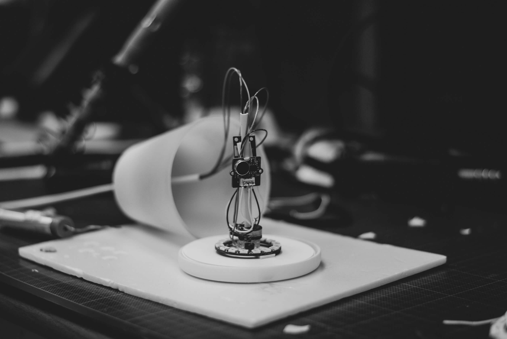

CONCEPT

SOUNDMATE
是一組為分隔兩地生活的家人、情侶或朋友設計的成對產品。透過程式運算將生活環境的聲音轉換為動態的數位視覺圖像，並呈現在對方的顯示螢幕上，藉由分享彼此聲景與傳遞聲音的實體互動，以遠端、低調的方式形成兩人關懷陪伴的連結。
SOUNDMATE is specially designed for couples or families who are not able to see each other every day.
The sound from their living spaces would be converted to real-time audio visualization displaying on the
screen through programming. By sharing the visualization and sending voice messages with the microphone,
SOUNDMATE provides a remote and privacy-keeping way to maintain the relationship between you and your
significant other.


 


